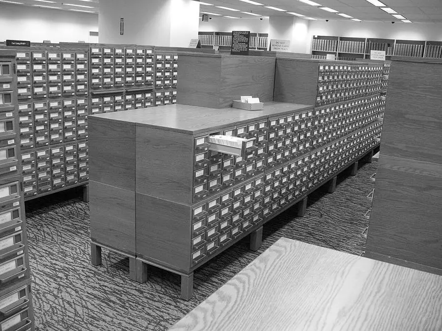
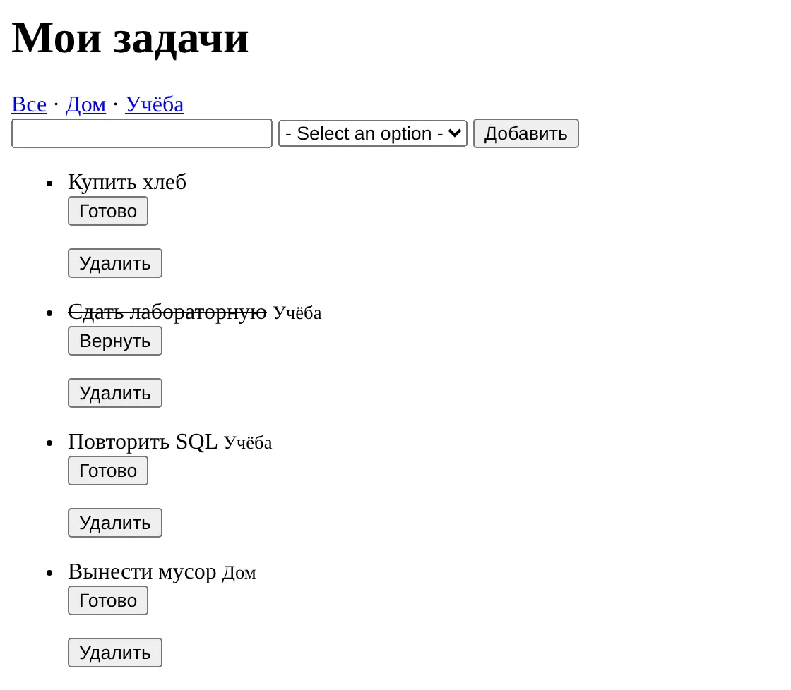

Django: келесі қадам — байланыстар және класс көріністері
Django-дағы алғашқы жобаның тапсырмалар тізімін жалғастырамыз. Тапсырмаларды санаттарға бөлеміз — бұл модельдер арасындағы алғашқы байланыс, дерекқорға артық сұрауларды алып тастаймыз, көріністерді Django-ның дайын кластарына көшіреміз және бәрін тесттермен бекітеміз. Шамамен бір жарым сағат.
Бұл «Алғашқы жобадағы» Django нұсқасының жалғасы. Модельдер мен миграциялар туралы — «Дерекқорлар» бөлімінде.

Не қажет болады
Алғашқы жоба аяқталған жерден бастаймыз.
- Өтілген Django нұсқасы (1–10 қадамдар). Өзіңіздікі жоқ болса, алғашқы жобаның кодын жүктеп,
python manage.py migrateорындаңыз. - Django 6.1 орнатылған, қосулы
.venvортасы:python -m django --versionкомандасы нұсқаны көрсетеді. - Дерекқорда бір-екі тапсырма — миграциядан кейін ескі деректер орнында қалғанын көресіз.
Қадамдармен қалай жұмыс істеу керек. Блок файл атымен белгіленсе, файлды толығымен ауыстырыңыз: солай импортты өткізіп алмайсыз. runserver сервері үнемі жұмыс істей берсін, командаларды терминалдың екінші терезесіне енгізіңіз. Өтілген қадамдар осы браузерде сақталады.
Санаттар, кластар және тесттер
Үш бөлім: модельдер арасындағы байланыс, класс көріністері және оларға тесттер.
0 / 9 қадам өтілді
-
1-бөлім. Модельдер арасындағы байланыстар
1-қадам. Санатты сипаттап, тапсырманы онымен байланыстырыңыз
Тапсырмаға «санат» деген мәтін өрісін қосуға болатын болса, бөлек модель не үшін керек? Мәтінді әр тапсырмаға жазуға тура келер еді: «Учёба» мен «учеба» әртүрлі санат болып шығады, ал санаттың атын өзгерту үшін барлық тапсырманы бір-бірлеп түзету керек болар еді. Бөлек кесте әр санатты бір рет сақтайды, ал тапсырма оған нөмірі арқылы сілтеме жасайды. Мұндай байланыс «көп-бірге» деп аталады: санатта тапсырма көп, тапсырманың санаты біреу. Django-да оны
ForeignKeyөрісі сипаттайды.tasks/models.pyfrom django.db import models class Category(models.Model): name = models.CharField(max_length=50, unique=True) class Meta: ordering = ["name"] verbose_name_plural = "categories" def __str__(self): return self.name class Task(models.Model): title = models.CharField(max_length=200) done = models.BooleanField(default=False) category = models.ForeignKey( Category, on_delete=models.SET_NULL, null=True, blank=True, related_name="tasks", ) def __str__(self): return self.titletasks/admin.pyfrom django.contrib import admin from .models import Category, Task admin.site.register(Category) @admin.register(Task) class TaskAdmin(admin.ModelAdmin): list_display = ["title", "category", "done"] list_filter = ["category", "done"]ForeignKey(Category, …)тапсырмалар кестесінеcategory_idбағанын — санат нөмірін қосады.on_delete=models.SET_NULLсанат жойылғанда тапсырмалармен не істеу керегін айтады: оларды санатсыз қалдыру.CASCADEтапсырмаларды санатпен бірге жояр еді, алPROTECTішінде тапсырмасы бар санатты жоюға тыйым салар еді.null=Trueдерекқорда бос мәнге рұқсат береді: алғашқы жобаның тапсырмаларында санат жоқ.blank=Trueформада өрісті бос қалдыруға рұқсат береді.related_name="tasks"— кері байланыстың аты: әр санатта өз тапсырмаларының тізіміcategory.tasksпайда болады. Ол 3-қадамда керек болады.unique=Trueбірдей екі санат ашуға жол бермейді, алorderingсанаттарды көрсетілген жердің бәрінде әліпби бойынша шығарады.TaskAdminәкімші панеліндегі тапсырмалар тізімінде санатты көрсетеді және санат пен «орындалды» белгісі бойынша сүзгі қосады.
Күтілетін нәтиже
Кодты тексеру өтеді:
System check identified no issues (0 silenced).
Ал басты бет, сервер қосулы болса, әзірге
no such column: tasks_task.category_idқатесін береді: модель жаңа өрісті біледі, ал дерекқордағы кесте әлі білмейді. Мұны келесі қадамдағы миграция түзетеді. -
2-қадам. Өзгерістерді дерекқорға көшіріңіз
makemigrationsкомандасы модельдерді алдыңғы миграциялармен салыстырып, айырмашылықты жаңа файлға жазады — бұл өзгерістер жоспары.migrateжоспарды орындайды: санаттар кестесін жасайды және тапсырмалар кестесіне баған қосады. Django сұрақ қоймайды:null=Trueарқасында ескі тапсырмалардың санатын бос қалдыруға болады. Онсызmakemigrationsбар жолдарға не жазу керегін сұрар еді (жиі кездесетін қателерді қараңыз).Терминалpython manage.py makemigrations python manage.py migrateКүтілетін нәтиже
Бірінші команда миграция файлын жасады:
Migrations for 'tasks': tasks/migrations/0002_category_task_category.py + Create model Category + Add field category to taskЕкіншісі оны қолданды:
Operations to perform: Apply all migrations: admin, auth, contenttypes, sessions, tasks Running migrations: Applying tasks.0002_category_task_category... OK
Ескі тапсырмалар орнында, тек әзірге санаты жоқ. Басты бет қайтадан ашылады.
-
3-қадам. Санаттарды толтырып, байланыс бойынша екі бағытта өтіңіз
Django консолін ашып, жолдарды бір-бірлеп енгізіңіз. Django 6.1 модельдерді консольге өзі импорттайды,
importжазудың қажеті жоқ.Терминалpython manage.py shellpython manage.py shellstudy = Category.objects.create(name="Учёба") home = Category.objects.create(name="Дом") Task.objects.create(title="Сдать лабораторную", category=study) Task.objects.create(title="Повторить SQL", category=study) Task.objects.create(title="Вынести мусор", category=home) Category.objects.all() study.tasks.all() study.tasks.count() task = Task.objects.get(title="Вынести мусор") task.category Task.objects.filter(category__name="Учёба")task.category— тура байланыс, тапсырмадан оның санатына.study.tasks— кері байланыс, санаттан оның тапсырмаларына.tasksатынrelated_nameберді; онсыз Django оныtask_setдеп атар еді.- Сүзгідегі
category__name— байланыс бойынша өту: қос астын сызу «санатқа өтіп, оныңnameөрісін ал» дегенді білдіреді. Django кестелерді SQL-да өзі біріктіреді.
Күтілетін нәтиже
Консольде былай шығады:
>>> study = Category.objects.create(name="Учёба") >>> home = Category.objects.create(name="Дом") >>> Task.objects.create(title="Сдать лабораторную", category=study) <Task: Сдать лабораторную> >>> Task.objects.create(title="Повторить SQL", category=study) <Task: Повторить SQL> >>> Task.objects.create(title="Вынести мусор", category=home) <Task: Вынести мусор> >>> Category.objects.all() <QuerySet [<Category: Дом>, <Category: Учёба>]> >>> study.tasks.all() <QuerySet [<Task: Сдать лабораторную>, <Task: Повторить SQL>]> >>> study.tasks.count() 2 >>> task = Task.objects.get(title="Вынести мусор") >>> task.category <Category: Дом> >>> Task.objects.filter(category__name="Учёба") <QuerySet [<Task: Сдать лабораторную>, <Task: Повторить SQL>]>
Бірінші
>>>жолының алдында консоль Python нұсқасын және… objects imported automaticallyжолын шығарады — Django осылай өзі қанша атауды импорттағанын хабарлайды. Консольден шығу —exit(). -
4-қадам. Формада санатты таңдап, тізімді сүзіңіз
Формаға
categoryөрісін қосамыз:ModelFormодан дерекқордағы санаттардың ашылмалы тізімін өзі жасайды.labelsөрістердің орысша жазуларын береді — онсыз Django Title және Category өріс атауларын көрсетер еді. Жаңаcategoryкөрінісі бір санаттың тапсырмаларын көрсетеді. Төрт файлды толығымен ауыстырыңыз.tasks/forms.pyfrom django import forms from .models import Task class TaskForm(forms.ModelForm): class Meta: model = Task fields = ["title", "category"] labels = {"title": "Задача", "category": "Категория"}tasks/views.pyfrom django.shortcuts import get_object_or_404, redirect, render from django.views.decorators.http import require_POST from .forms import TaskForm from .models import Category, Task def index(request): if request.method == "POST": form = TaskForm(request.POST) if form.is_valid(): form.save() return redirect("index") else: form = TaskForm() return render(request, "tasks/index.html", { "tasks": Task.objects.all(), "categories": Category.objects.all(), "form": form, }) def category(request, pk): current = get_object_or_404(Category, pk=pk) return render(request, "tasks/index.html", { "tasks": current.tasks.all(), "categories": Category.objects.all(), "current": current, "form": TaskForm(initial={"category": current}), }) @require_POST def toggle(request, pk): task = get_object_or_404(Task, pk=pk) task.done = not task.done task.save() return redirect("index") @require_POST def delete(request, pk): get_object_or_404(Task, pk=pk).delete() return redirect("index")mysite/urls.pyfrom django.contrib import admin from django.urls import path from tasks import views urlpatterns = [ path("admin/", admin.site.urls), path("", views.index, name="index"), path("category/<int:pk>/", views.category, name="category"), path("tasks/<int:pk>/toggle/", views.toggle, name="toggle"), path("tasks/<int:pk>/delete/", views.delete, name="delete"), ]tasks/templates/tasks/index.html<h1>{% if current %}Задачи: {{ current.name }}{% else %}Мои задачи{% endif %}</h1> <nav> <a href="{% url 'index' %}">Все</a> {% for category in categories %} · <a href="{% url 'category' category.pk %}">{{ category.name }}</a> {% endfor %} </nav> <form method="post" action="{% url 'index' %}"> {% csrf_token %} {{ form.title }} {{ form.category }} <button>Добавить</button> {{ form.title.errors }} </form> <ul> {% for task in tasks %} <li> {% if task.done %}<s>{{ task.title }}</s>{% else %}{{ task.title }}{% endif %} {% if task.category %}<small>{{ task.category.name }}</small>{% endif %} <form method="post" action="{% url 'toggle' task.pk %}"> {% csrf_token %} <button>{% if task.done %}Вернуть{% else %}Готово{% endif %}</button> </form> <form method="post" action="{% url 'delete' task.pk %}"> {% csrf_token %} <button>Удалить</button> </form> </li> {% empty %} <li>Задач пока нет.</li> {% endfor %} </ul>get_object_or_404мұндай нөмірлі санат болмаса, 500 сервер қатесінің орнына 404 бетімен жауап береді.current.tasks.all()— 3-қадамдағы сол кері байланыс: тек осы санаттың тапсырмалары.initialформада ағымдағы санатты алдын ала таңдайды: «Учёба» бетінен қосылған тапсырма бірден «Учёба» санатына түседі.- Форма басты бетке жіберіледі (
action="{% url 'index' %}"):categoryкөрінісі тек тізімді көрсетеді, сақтамайды.
Күтілетін нәтиже
Форманың үстінде «Все · Дом · Учёба» сілтемелері, ал өрістің жанында ашылмалы тізім пайда болды. Бет кодында (Ctrl + U) ол былай көрінеді:
<select name="category" id="id_category"> <option value="" selected>- Select an option -</option> <option value="2">Дом</option> <option value="1">Учёба</option> </select>
«Дом» сілтемесі
/category/2/бетіне апарады, онда тек «Вынести мусор» тапсырмасы көрінеді./category/999/мекенжайы «Page not found (404)» деп жауап береді.«- Select an option -» бос нұсқасы — «санатсыз» дегенді білдіреді: оған
blank=Trueрұқсат береді. Санат нөмірлері сізде басқаша болуы мүмкін. -
5-қадам. Артық сұрауларды алып тастаңыз: select_related
Үлгі әр тапсырмада
{{ task.category.name }}шығарады.Task.objects.all()тек тапсырмаларды жүктейді, ал әр тапсырманың санатына Django дерекқорға бөлек барады — үлгі оған жүгінген сәтте. Үш тапсырма — төрт сұрау, жүз тапсырма — жүз бір сұрау. Мұны N+1 мәселесі деп атайды: дерек көбейген сайын бет баяулай береді. Консольде сұрауларды санайық:python manage.py shellfrom django.db import connection from django.test.utils import CaptureQueriesContext with CaptureQueriesContext(connection) as queries: names = [str(task.category) for task in Task.objects.all()] len(queries) with CaptureQueriesContext(connection) as queries: names = [str(task.category) for task in Task.objects.select_related("category")] len(queries) print(queries[0]["sql"])select_related("category")екі кестені бір сұрауда біріктіреді (LEFT OUTER JOIN), және тапсырмалар санаттарымен бірге келеді.tasks/views.pyішіндегіindexфункциясын ауыстырыңыз: бір жол өзгерді,"tasks": ….tasks/views.py — index функциясыdef index(request): if request.method == "POST": form = TaskForm(request.POST) if form.is_valid(): form.save() return redirect("index") else: form = TaskForm() return render(request, "tasks/index.html", { "tasks": Task.objects.select_related("category"), "categories": Category.objects.all(), "form": form, })Санат бетінде мұны істеудің қажеті жоқ: тапсырмалар
current.tasksарқылы алынған, Django олардың санатын біледі, сондықтан онда артық сұрау жоқ. Байланыстың кері жағы үшін — мысалы, әр санаттың тапсырмаларын шығару үшін —prefetch_relatedбар: ол бәрін екінші сұраумен жүктейді.Күтілетін нәтиже
select_related-сіз — төрт сұрау, онымен — біреу:>>> from django.db import connection >>> from django.test.utils import CaptureQueriesContext >>> with CaptureQueriesContext(connection) as queries: ... names = [str(task.category) for task in Task.objects.all()] ... >>> len(queries) 4 >>> with CaptureQueriesContext(connection) as queries: ... names = [str(task.category) for task in Task.objects.select_related("category")] ... >>> len(queries) 1 >>> print(queries[0]["sql"]) SELECT "tasks_task"."id", "tasks_task"."title", "tasks_task"."done", "tasks_task"."category_id", "tasks_category"."id", "tasks_category"."name" FROM "tasks_task" LEFT OUTER JOIN "tasks_category" ON ("tasks_task"."category_id" = "tasks_category"."id")Сан сізде басқаша болуы мүмкін:
select_related-сіз бір сұрау және санаты бар әр тапсырмаға тағы бір сұрау шығады. Ескі тапсырмалардың бос санаты үшін Django дерекқорға бармайды....кейінгі бос жол —withблогын жабатын Enter пернесі. -
2-бөлім. Класс көріністері
6-қадам. Тапсырма қосу — CreateView
indexфункциясы қазір екі жұмыс атқарады: тізімді көрсетеді (GET) және форманы сақтайды (POST). Типтік жұмыс үшін Django-да дайын кластар — жалпыланған көріністер бар. Сақтаудан бастайық:CreateViewформаны өзі жасайды, тексереді, тапсырманы сақтайды және қайта бағыттайды. Бізге модельді, форманы және қайту мекенжайын көрсету ғана қалады.tasks/views.pyfrom django.shortcuts import get_object_or_404, redirect, render from django.urls import reverse_lazy from django.views.decorators.http import require_POST from django.views.generic import CreateView from .forms import TaskForm from .models import Category, Task def index(request): return render(request, "tasks/index.html", { "tasks": Task.objects.select_related("category"), "categories": Category.objects.all(), "form": TaskForm(), }) def category(request, pk): current = get_object_or_404(Category, pk=pk) return render(request, "tasks/index.html", { "tasks": current.tasks.all(), "categories": Category.objects.all(), "current": current, "form": TaskForm(initial={"category": current}), }) class TaskCreateView(CreateView): model = Task form_class = TaskForm success_url = reverse_lazy("index") @require_POST def toggle(request, pk): task = get_object_or_404(Task, pk=pk) task.done = not task.done task.save() return redirect("index") @require_POST def delete(request, pk): get_object_or_404(Task, pk=pk).delete() return redirect("index")mysite/urls.pyfrom django.contrib import admin from django.urls import path from tasks import views urlpatterns = [ path("admin/", admin.site.urls), path("", views.index, name="index"), path("category/<int:pk>/", views.category, name="category"), path("tasks/add/", views.TaskCreateView.as_view(), name="add"), path("tasks/<int:pk>/toggle/", views.toggle, name="toggle"), path("tasks/<int:pk>/delete/", views.delete, name="delete"), ]tasks/templates/tasks/index.html<h1>{% if current %}Задачи: {{ current.name }}{% else %}Мои задачи{% endif %}</h1> <nav> <a href="{% url 'index' %}">Все</a> {% for category in categories %} · <a href="{% url 'category' category.pk %}">{{ category.name }}</a> {% endfor %} </nav> <form method="post" action="{% url 'add' %}"> {% csrf_token %} {{ form.title }} {{ form.category }} <button>Добавить</button> {{ form.title.errors }} </form> <ul> {% for task in tasks %} <li> {% if task.done %}<s>{{ task.title }}</s>{% else %}{{ task.title }}{% endif %} {% if task.category %}<small>{{ task.category.name }}</small>{% endif %} <form method="post" action="{% url 'toggle' task.pk %}"> {% csrf_token %} <button>{% if task.done %}Вернуть{% else %}Готово{% endif %}</button> </form> <form method="post" action="{% url 'delete' task.pk %}"> {% csrf_token %} <button>Удалить</button> </form> </li> {% empty %} <li>Задач пока нет.</li> {% endfor %} </ul>tasks/templates/tasks/task_form.html<h1>Новая задача</h1> <form method="post"> {% csrf_token %} {{ form.as_p }} <button>Добавить</button> </form> <p><a href="{% url 'index' %}">Вернуться к списку</a></p>indexішіненif request.method == "POST"тармағы толығымен кетті: оның жұмысын ендіTaskCreateViewатқарады.success_url = reverse_lazy("index")— сақтағаннан кейін қайда бағыттау керек.reverse_lazyмекенжайды файл жүктелгенде емес, бірінші сұрауда есептейді: класс сипатталған сәтте маршруттар әлі жүктелмеген.- Форма тексеруден өтпесе,
CreateViewмодель атымен аталған үлгіні —tasks/task_form.htmlкөрсетеді, онда сол форма қателерімен бірге шығады. index.htmlішінде бір жол өзгерді: форма жаңа{% url 'add' %}мекенжайына жіберіледі.
Күтілетін нәтиже
Тапсырмалар бұрынғыдай қосылады. Сервер терминалында форма жаңа мекенжайға кететіні, содан кейін браузер басты бетке оралатыны көрінеді:
[17/Nov/2026 07:06:26] "POST /tasks/add/ HTTP/1.1" 302 0 [17/Nov/2026 07:06:26] "GET / HTTP/1.1" 200 2872
Бос форманы браузердің өзі жібермейді (
requiredатрибуты), бірақ сервер де өзі тексереді. Бос атау бәрібір келсе,CreateView«Новая задача» бетін қатемен қайтарады:<ul class="errorlist" id="id_title_error"><li>This field is required.</li></ul>
Күн, уақыт және соңғы сан — жауаптың байттағы өлшемі — сізде басқаша болады. Қате мәтіні ағылшынша, себебі
settings.pyішіндеLANGUAGE_CODE = 'en-us'тұр;'ru'болса, ол «Обязательное поле.» болады. -
7-қадам. Тізім — ListView
Енді
indexпенcategoryекеуін бір класпен ауыстырамыз. Екі бет те бір үлгіні көрсетеді, айырмашылық тек қай тапсырмаларды алуда.ListViewтізімдіget_queryset()әдісінен алады, сондықтан бір класс екі маршрутқа да қызмет етеді: санат бетіндеself.kwargsішінде мекенжайдағыpkжатады.tasks/views.pyfrom django.shortcuts import get_object_or_404, redirect from django.urls import reverse_lazy from django.views.decorators.http import require_POST from django.views.generic import CreateView, ListView from .forms import TaskForm from .models import Category, Task class TaskListView(ListView): template_name = "tasks/index.html" context_object_name = "tasks" def get_queryset(self): self.current = None if "pk" in self.kwargs: self.current = get_object_or_404(Category, pk=self.kwargs["pk"]) return self.current.tasks.all() return Task.objects.select_related("category") def get_context_data(self, **kwargs): context = super().get_context_data(**kwargs) context["categories"] = Category.objects.all() context["current"] = self.current context["form"] = TaskForm(initial={"category": self.current}) return context class TaskCreateView(CreateView): model = Task form_class = TaskForm success_url = reverse_lazy("index") @require_POST def toggle(request, pk): task = get_object_or_404(Task, pk=pk) task.done = not task.done task.save() return redirect("index") @require_POST def delete(request, pk): get_object_or_404(Task, pk=pk).delete() return redirect("index")mysite/urls.pyfrom django.contrib import admin from django.urls import path from tasks import views urlpatterns = [ path("admin/", admin.site.urls), path("", views.TaskListView.as_view(), name="index"), path("category/<int:pk>/", views.TaskListView.as_view(), name="category"), path("tasks/add/", views.TaskCreateView.as_view(), name="add"), path("tasks/<int:pk>/toggle/", views.toggle, name="toggle"), path("tasks/<int:pk>/delete/", views.delete, name="delete"), ]template_name— әдепкіtasks/task_list.htmlатының орнына біздің үлгі.context_object_name = "tasks"— үлгідегі тізімнің аты (әдепкідеobject_list), сондықтан үлгіні өзгертудің қажеті жоқ.get_queryset()қай тапсырмаларды көрсетуді шешеді: басты бетте — бәрін, бірден санаттарымен, санатта —current.tasks.all().get_context_data()үлгіге тізімге қатысы жоқ нәрселерді қосады: сілтемелерге арналған санаттарды, ағымдағы санатты және бос форманы.toggleменdeleteфункция болып қалады: оларға үлгі де, форма да керек емес, ал бес жолдық функция класқа қарағанда түсініктірек. Кластар жұмыс типтік болғанда тиімді.
Күтілетін нәтиже
System check identified no issues (0 silenced).
Беттер 6-қадамнан кейінгідей көрінеді және жұмыс істейді, ал код азайды.
ListViewтек GET-ке жауап береді: басты бетке жіберілетін форма бір жерде қалып қойса, сервер 405 деп жауап береді (жиі кездесетін қателерді қараңыз). -
3-бөлім. Тесттер
8-қадам. Көріністерді тесттермен тексеріңіз
tasks/tests.pyфайлын толығымен ауыстырыңыз.TestCaseтесттер үшін бөлек бос дерекқор жасайды және әр тесттен кейін өзгерістерді кері қайтарады, сондықтан сіздің тапсырмаларыңызға зиян келмейді.setUpTestDataкластағы барлық тесттер үшін санаттар мен үш тапсырманы бір рет жасайды.tasks/tests.pyfrom django.test import TestCase from django.urls import reverse from .models import Category, Task class TaskViewsTests(TestCase): @classmethod def setUpTestData(cls): cls.study = Category.objects.create(name="Учёба") cls.home = Category.objects.create(name="Дом") Task.objects.create(title="Сдать лабораторную", category=cls.study) Task.objects.create(title="Вынести мусор", category=cls.home) Task.objects.create(title="Без категории") def test_list_shows_all_tasks(self): response = self.client.get(reverse("index")) self.assertEqual(response.status_code, 200) self.assertTemplateUsed(response, "tasks/index.html") self.assertEqual(len(response.context["tasks"]), 3) def test_category_shows_only_its_tasks(self): response = self.client.get(reverse("category", args=[self.study.pk])) self.assertContains(response, "Сдать лабораторную") self.assertNotContains(response, "Вынести мусор") def test_unknown_category_is_404(self): response = self.client.get(reverse("category", args=[999])) self.assertEqual(response.status_code, 404) def test_create_saves_task_and_redirects(self): response = self.client.post(reverse("add"), {"title": "Полить цветы", "category": self.home.pk}) self.assertRedirects(response, reverse("index")) self.assertTrue(self.home.tasks.filter(title="Полить цветы").exists()) def test_create_rejects_empty_title(self): response = self.client.post(reverse("add"), {"title": ""}) self.assertEqual(response.status_code, 200) self.assertIn("title", response.context["form"].errors) self.assertEqual(Task.objects.count(), 3) def test_list_needs_same_queries_for_any_number_of_tasks(self): for number in range(10): Task.objects.create(title=f"Задача {number}", category=self.study) with self.assertNumQueries(3): self.client.get(reverse("index"))Терминалpython manage.py testresponse.context— көрініс үлгіге берген нәрсе: басты бетте дәл үш тапсырма бар екені осылай көрінеді.- Сүзгі екі жақтан тексеріледі: «Учёба» тапсырмасы бетте бар, ал «Дом» тапсырмасы жоқ. Жоқ санат 404 деп жауап береді.
CreateViewсанаты бар тапсырманы сақтап, тізімге бағыттайды; бос атау сақталмайды.assertNumQueries(3)N+1 мәселесін қадағалайды: басты бетте тапсырмалар саны қанша болса да дәл үш сұрау — санаттарымен тапсырмалар, сілтемелерге арналған санаттар және ашылмалы тізімге арналған санаттар.
Күтілетін нәтиже
Found 6 test(s). Creating test database for alias 'default'... System check identified no issues (0 silenced). ...... ---------------------------------------------------------------------- Ran 6 tests in 0.032s OK Destroying test database for alias 'default'...
Сұраулар санына арналған тест
select_related-ті шынымен күзетеді.get_querysetішіндегі жолдыTask.objects.all()деп ауыстырсаңыз, ол құлайды:FAIL: test_list_needs_same_queries_for_any_number_of_tasks (tasks.tests.TaskViewsTests.test_list_needs_same_queries_for_any_number_of_tasks) AssertionError: 15 != 3 : 15 queries executed, 3 expected FAILED (failures=1)
Орындалу уақыты сізде басқаша болады. Құлағанда 15 сұрау: үш әдеттегі сұрау және санаты бар он екі тапсырманың әрқайсысына біреуден.
-
9-қадам. Браузерде тексеріңіз
Серверді іске қосып,
http://127.0.0.1:8000/ашыңыз. Әртүрлі санаттағы бір-екі тапсырма қосыңыз, санат сілтемелері бойынша өтіңіз, бір тапсырманы «Готово» батырмасымен белгілеп, екіншісін жойыңыз./admin/әкімші панелінде Categories бөлімі, ал тапсырмалар тізімінде оң жақта сүзгі пайда болды.Терминалpython manage.py runserverҚалай көрінуі керек

«Вынести мусор» тапсырмасы формадан «Дом» санатымен жаңа ғана қосылды, «Сдать лабораторную» «Готово» батырмасымен белгіленген. Ескі «Купить хлеб» тапсырмасының санаты жоқ.
Өзіңізді тексеріңіз
Алдымен ойша жауап беріп, содан кейін жауапты ашыңыз.
ForeignKey өрісінде null=True не үшін тұр?
Дерекқорда алғашқы жобаның тапсырмалары бұрыннан бар еді, олардың санаты жоқ. null=True category_id бағанында бос мән қалдыруға рұқсат береді, сондықтан миграция сұрақсыз өтті. Онсыз makemigrations ескі жолдар үшін әдепкі мән талап етер еді.
«Дом» санатын жойсақ, тапсырмалармен не болады?
Тапсырмалар қалады, тек санаты жоғалады: мұны on_delete=models.SET_NULL талап етеді. Жою (1, {'tasks.Category': 1}) қайтарады — бір санат жойылды, бірде-бір тапсырма жойылмады. CASCADE болса, санатпен бірге оның тапсырмалары да жойылар еді, PROTECT болса, ішінде тапсырмасы бар санатты Django жоюға бермес еді.
select_related мен prefetch_related айырмашылығы неде?
select_related кестелерді бір SQL сұрауында біріктіреді (JOIN) және әр жазбада бір байланысқан нысан болғанда жарайды: тапсырманың санаты біреу. prefetch_related екінші сұрау жасап, нәтижелерді Python-да нысандарға таратады — ол кері байланыс пен «көп-көпке» үшін керек, мысалы, әр санаттың барлық тапсырмасын шығару үшін.
ListView-ке көшкеннен кейін басты бетке жіберілген форма неге 405 жауабын алады?
ListView тек оқуға — GET-ке (және қызметтік HEAD пен OPTIONS-қа) жауап бере алады. POST-қа ол «Method Not Allowed» деп жауап береді. Сақтау енді /tasks/add/ мекенжайындағы TaskCreateView-те, форма сонда жіберілуі керек.
ListView-те context_object_name = "tasks" не үшін көрсетілді?
Әдепкіде тізім үлгіге object_list және task_list атауларымен түседі. Алғашқы жобадағы үлгіміз tasks бойынша жүреді, ал кластағы бір жол үлгіні түзетуден құтқарады.
Өзіндік тапсырма
Тапсырмалар көбейді — тізімді «Назад» және «Дальше» сілтемелері бар бес тапсырмадан тұратын беттерге бөліңіз. ListView мұны өзі істей алады. Тестті ұмытпаңыз: бір бетте — бес тапсырма, жоқ бет — 404.
Шешімін көрсету
Класқа бір жол, үлгіге беттер бойынша сілтемелер қосылады. ListView үлгіге page_obj нысанын береді және жоқ бет нөміріне 404 деп жауап береді.
class TaskListView(ListView):
template_name = "tasks/index.html"
context_object_name = "tasks"
paginate_by = 5
# ... get_queryset и get_context_data без изменений ...{% if page_obj.has_other_pages %}
<p>
{% if page_obj.has_previous %}<a href="?page={{ page_obj.previous_page_number }}">Назад</a>{% endif %}
Страница {{ page_obj.number }} из {{ page_obj.paginator.num_pages }}
{% if page_obj.has_next %}<a href="?page={{ page_obj.next_page_number }}">Дальше</a>{% endif %}
</p>
{% endif %} def test_list_needs_same_queries_for_any_number_of_tasks(self):
for number in range(10):
Task.objects.create(title=f"Задача {number}", category=self.study)
with self.assertNumQueries(4):
self.client.get(reverse("index"))
def test_pagination(self):
for number in range(10):
Task.objects.create(title=f"Задача {number}")
first = self.client.get(reverse("index"))
self.assertEqual(len(first.context["tasks"]), 5)
self.assertContains(first, "Страница 1 из 3")
self.assertEqual(self.client.get(reverse("index") + "?page=3").status_code, 200)
self.assertEqual(self.client.get(reverse("index") + "?page=4").status_code, 404)Беттегіш тапсырмаларды бөлек COUNT сұрауымен санайды, сондықтан сұраулар санына арналған тестте енді 3 емес, 4. Қалған тесттер өзгеріссіз өтеді: барлығы 7 тест, OK.
Функция ма, класс па
Екі тәсіл де дұрыс. Жұмыс типтік болса, кластар кодты үнемдейді, ал әрекет ерекше болса, функциялар түсініктірек.
| Не керек | Функция (алғашқы жоба) | Класс (осы бөлім) |
|---|---|---|
| Тізімді көрсету | render(request, "tasks/index.html", {…}) |
ListView: get_queryset() және template_name |
| Форманы сақтау | if request.method == "POST", is_valid(), save(), redirect() |
CreateView: model, form_class, success_url |
| Форма қателерін көрсету | форманы үлгіге қолмен беру | форма бар tasks/task_form.html үлгісі |
| Үлгіге дерек қосу | render үшін сөздіктегі кілт |
get_context_data() әдісі |
| Неге жарайды | ерекше әрекеттерге: «Готово», «Удалить» | типтік беттерге: тізім, жасау, өзгерту, жою (UpdateView, DeleteView, DetailView) |
Жиі кездесетін қателер және оларды қалай түзету керек
Хабарламалар Django 6.1 көрсететіндей берілген. Шешімін көру үшін қатені басыңыз.
«no such column: tasks_task.category_id»
django.db.utils.OperationalError: no such column: tasks_task.category_id Модель category өрісін біледі, ал дерекқор кестесінде мұндай баған әлі жоқ. 2-қадамды орындаңыз: python manage.py makemigrations және python manage.py migrate.
makemigrations: «It is impossible to add a non-nullable field 'category'»
It is impossible to add a non-nullable field 'category' to task without specifying a default. This is because the database needs something to populate existing rows. Өрісте null=True жоқ, ал кестеде тапсырмалар бар: дерекқор олардың жаңа бағанына ештеңе жаза алмайды. 2 нұсқасын (Quit and manually define a default value in models.py) таңдап, 1-қадамдағыдай өріске null=True, blank=True қосыңыз да, makemigrations командасын қайта іске қосыңыз.
«'Category' object has no attribute 'task_set'»
AttributeError: 'Category' object has no attribute 'task_set' Django кері байланысқа task_set атын ForeignKey-те related_name болмағанда ғана береді. Бізде related_name="tasks", сондықтан санаттың тапсырмалары — category.tasks.all().
«Method Not Allowed (POST): /» және 405 жауабы
Method Not Allowed (POST): / Қосу формасы басты бетке жіберіледі, ал онда енді тек GET қабылдайтын ListView тұр. index.html ішіндегі форма жолын тексеріңіз: <form method="post" action="{% url 'add' %}"> (6-қадам).
«TemplateDoesNotExist: tasks/task_form.html»
django.template.exceptions.TemplateDoesNotExist: tasks/task_form.html CreateView бұл үлгіні форма тексеруден өтпегенде немесе /tasks/add/ ашылғанда көрсетеді. 6-қадамдағы tasks/templates/tasks/task_form.html файлын жасаңыз — аты модель атауы мен _form жалғауынан құралады.
«Reverse for 'add' not found»
django.urls.exceptions.NoReverseMatch: Reverse for 'add' not found. 'add' is not a valid view function or pattern name. Үлгі add маршрутына сілтейді, ал mysite/urls.py ішінде ол жоқ. path("tasks/add/", views.TaskCreateView.as_view(), name="add") жолын қосыңыз.
Тест: «AssertionError: 15 != 3 : 15 queries executed, 3 expected»
AssertionError: 15 != 3 : 15 queries executed, 3 expected Басты бетте қайтадан N+1 мәселесі: get_queryset ішінен select_related("category") жоғалған, немесе үлгі алдын ала жүктелмеген басқа байланысқа жүгінеді. select_related-ті 7-қадамдағыдай қайтарыңыз.
Дереккөздер
Код Django 6.1-ге арналған. Барлық қадам Python 3.13 және Django 6.1.3 нұсқасында орындалды, дереккөздер тексерілді: .
- Django 6.1: ForeignKey өрісі —
on_delete,related_name,nullжәнеblank - Django 6.1: байланыстар арқылы сұраулар — тура және кері байланыс,
category__nameсүзгісі - Django 6.1: select_related және prefetch_related
- Django 6.1: миграциялар
- Django 6.1: класс көріністері — кіріспе
- Django 6.1: ListView
- Django 6.1: CreateView
- Django 6.1: тест құралдары — тест клиенті және
assertNumQueries - Django 6.1: беттеу — өзіндік тапсырма үшін